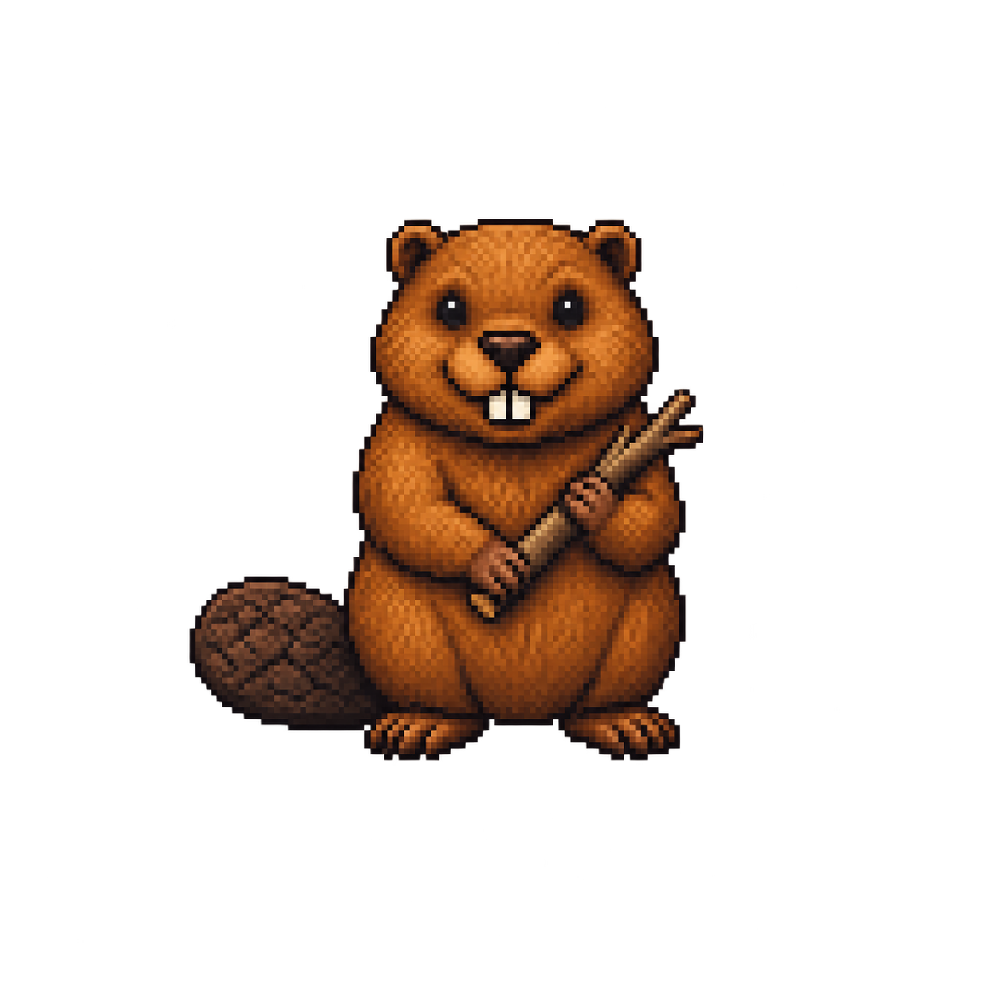

AMIGOS DO SILAS
A Barragem
das Frações
Ajude Bento a conter a correnteza usando matemática e habilidade.

Sua missão: complete a barragem somando frações.
Escolha troncos, confira a soma e construa uma camada por fase.
1 Escolha→2 Confira→3 Solte